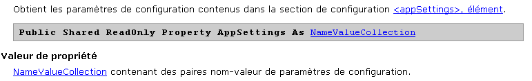
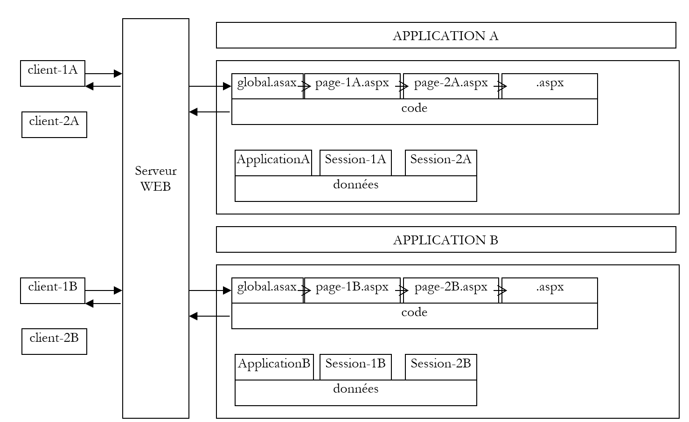
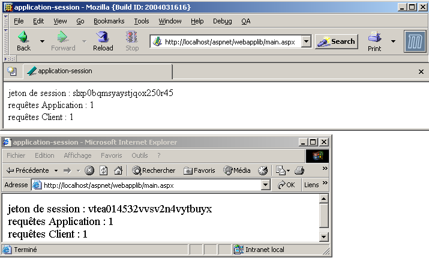
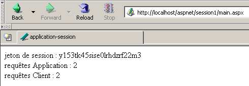
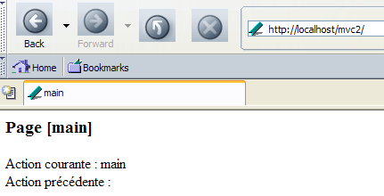

4. The Fundamentals of ASP.NET Development
4.1. The Concept of an ASP.NET Web Application
4.1.1. Introduction
A web application is an application that brings together various documents (HTML, .NET code, images, sounds, etc.). These documents must be located under a single root directory, known as the web application root. A virtual path on the web server is associated with this root. We have encountered the concept of a virtual directory for the Cassini web server. This concept also exists for the IIS web server. An important difference between the two servers is that at any given time, IIS can have any number of virtual directories, whereas the Cassini web server has only one—the one specified at startup. This means that the IIS server can serve multiple web applications simultaneously, whereas the Cassini server serves only one at a time. In the previous examples, the Cassini server was always launched with the parameters (<webroot>,/aspnet) that associated the virtual folder /aspnet with the physical folder <webroot>. The web server therefore always served the same web application. This did not prevent us from writing and testing different, independent pages within this single web application. Each web application has its own resources, located under its physical root <webroot>:
- a [bin] folder where pre-compiled classes can be placed
- a [global.asax] file that allows you to initialize the web application as a whole as well as the runtime environment for each of its users
- a [web.config] file that allows you to configure the application’s behavior
- a [default.aspx] file that serves as the application’s entry point
- ...
As soon as an application uses one of these three resources, it requires its own physical and virtual paths. There is, in fact, no reason for two different web applications to be configured in the same way. Our previous examples could all be placed within the same application (<webroot>,/aspnet) because they did not use any of the aforementioned resources.
Let’s revisit the MVC architecture recommended at the beginning of this chapter for web application development:

The web application consists of class files (controller, business classes, data access classes) and presentation files (HTML documents, images, sounds, style sheets, etc.). All of these files will be placed under a single root directory, which we will sometimes refer to as <application-path>. This root directory will be associated with a virtual path <application-vpath>. The mapping between this virtual path and the physical path is configured via the web server. We saw that for the Cassini server, this mapping occurs when the server is launched. For example, in a command prompt window, we would launch Cassini with:
In the <application-path> folder, depending on our needs, we will find:
- the [bin] folder for placing pre-compiled classes (DLLs)
- the [global.asax] file when we need to perform initialization either during application startup or during a user session
- the [web.config] file when we need to configure the application
- the [default.aspx] file when we need a default page in the application
To adhere to this web application concept, the upcoming examples will all be placed in an <application-path> folder specific to the application, which will be associated with a virtual <application-vpath> folder, as the Cassini server is launched to link these two parameters.
4.1.2. Configuring a web application
If <application-path> is the root of an ASP.NET application, you can use the <application-path>\web.config file to configure it. This file is in XML format. Here is an example:
<?xml version="1.0" encoding="UTF-8" ?>
<configuration>
<appSettings>
<add key="name" value="tintin"/>
<add key="age" value="27"/>
</appSettings>
</configuration>
Please note that XML tags are case-sensitive. All configuration information must be enclosed within the <configuration> and </configuration> tags. There are many configuration sections available. We will cover only one here: the <appSettings> section, which allows you to initialize data using the <add> tag. The syntax for this tag is as follows:
When the web server launches an application, it checks whether there is a file named web.config in <application-path>. If so, it reads it and stores its information in a [ConfigurationSettings] object, which will be available to all pages of the application as long as it is active. The [ConfigurationSettings] class has a static method [AppSettings]:

To retrieve the value of a key C from the configuration file, write ConfigurationSettings.AppSettings("C"). This returns a string. To use the previous configuration file, let’s create a page named [default.aspx]. The VB code in the [default.aspx.vb] file will be as follows:
Imports System.Configuration
Public Class _default
Inherits System.Web.UI.Page
Protected name As String
Protected age As String
Private Sub Page_Load(ByVal sender As System.Object, ByVal e As System.EventArgs) Handles MyBase.Load
'Retrieve configuration information
name = ConfigurationSettings.AppSettings("name")
age = ConfigurationSettings.AppSettings("age")
End Sub
End Class
We can see that when the page loads, the values of the configuration parameters [name] and [age] are retrieved. They will be displayed by the presentation code in [default.aspx]:
<%@ Page src="default.aspx.vb" Language="vb" AutoEventWireup="false" Inherits="_default" %>
<html>
<head>
<title>Configuration</title>
</head>
<body>
Name:
<% =name %><br/>
Age:
<% =age %><br/>
</body>
</html>
For the test, place the [web.config], [default.aspx], and [default.aspx.vb] files in the same folder:
D:\data\devel\aspnet\poly\chap2\config1>dir
03/30/2004 3:06 PM 418 default.aspx.vb
03/30/2004 2:57 PM 236 default.aspx
03/30/2004 14:53 186 web.config
Let <application-path> be the folder containing the three application files. The Cassini server is launched with the parameters (<application-path>,/aspnet/config1). We request the URL [http://localhost/aspnet/config1]. Since [config1] is a folder, the web server will look for a file named [default.aspx] inside it and display it if found. In this case, it will find it:

4.1.3. Application, Session, Context
4.1.3.1. The global.asax file
The code in the [global.asax] file is always executed before the page requested by the current request is loaded. It must be located in the <application-path> root of the application. If it exists, the [global.asax] file is used at various times by the web server:
- when the web application starts or ends
- when a user session starts or ends
- when a user request begins
As with .aspx pages, the [global.asax] file can be written in different ways, particularly by separating VB code into a controller class and presentation code. This is the default choice made by Visual Studio, and we will do the same here. There is normally no presentation to handle, as this role is assigned to the .aspx pages. The content of the [global.asax] file is therefore reduced to a directive referencing the file containing the controller code:
<%@ Application src="Global.asax.vb" Inherits="Global" %>
Note that the directive is no longer [Page] but [Application]. The associated controller code [global.asax.vb], generated by Visual Studio, is as follows:
Imports System
Imports System.Web
Imports System.Web.SessionState
Public Class Global
Inherits System.Web.HttpApplication
Sub Application_Start(ByVal sender As Object, ByVal e As EventArgs)
' Fires when the application starts
End Sub
Sub Session_Start(ByVal sender As Object, ByVal e As EventArgs)
' Triggers when the session starts
End Sub
Sub Application_BeginRequest(ByVal sender As Object, ByVal e As EventArgs)
' Triggers at the start of each request
End Sub
Sub Application_AuthenticateRequest(ByVal sender As Object, ByVal e As EventArgs)
' Triggers when an authentication attempt is made
End Sub
Sub Application_Error(ByVal sender As Object, ByVal e As EventArgs)
' Triggered when an error occurs
End Sub
Sub Session_End(ByVal sender As Object, ByVal e As EventArgs)
' Triggers when the session ends
End Sub
Sub Application_End(ByVal sender As Object, ByVal e As EventArgs)
' Triggers when the application ends
End Sub
End Class
Note that the controller class derives from the [HttpApplication] class. Throughout the life of an application, there are several important events. These are handled by procedures whose skeleton is shown above.
- [Application_Start]: Recall that a web application is "contained" within a virtual path. The application starts as soon as a page located in this virtual path is requested by a client. The [Application_Start] procedure is then executed. This will be the only time. In this procedure, we will perform any initialization necessary for the application, such as creating objects whose lifetime matches that of the application.
- [Application-End]: is executed when the application terminates. Every application has an idle timeout associated with it, configurable in [web.config], after which the application is considered terminated. It is therefore the web server that makes this decision based on the application’s settings. An application’s idle timeout is defined as the period during which no client has made a request for an application resource.
- [Session-Start]/[Session_End]: A session is attached to every client unless the application is configured to have no sessions. A client is not a user sitting in front of a screen. If a user has opened two browsers to interact with the application, they represent two clients. A client is identified by a session token that they must include with each of their requests. This session token is a unique string of characters randomly generated by the web server. No two clients can have the same session token. This token follows the client as follows:
- The client making their first request does not send a session token. The web server recognizes this and assigns one to them. This marks the start of the session, and the [Session_Start] procedure is executed. This happens only once.
- The client makes subsequent requests by sending the token that identifies it. This allows the web server to retrieve information associated with this token. This enables tracking between the client’s various requests.
- The application can provide a client with a session-end form. In this case, the client initiates the session termination themselves. The [Session_End] procedure will be executed. This will happen only once.
- The client may never request to end the session themselves. In this case, after a certain period of session inactivity—which can also be configured via [web.config]—the session will be terminated by the web server. The [Session_End] procedure will then be executed.
- [Application_BeginRequest]: This procedure is executed as soon as a new request arrives. It is therefore executed for every request from any client. This is a good place to examine the request before forwarding it to the requested page. You can even decide to redirect it to another page.
- [Application_Error]: is executed whenever an error occurs that is not explicitly handled by the code in the [global.asax.vb] controller. Here, you can redirect the client’s request to a page explaining the cause of the error.
If none of these events need to be handled, then the [global.asax] file can be ignored. This is what was done in the first examples of this chapter.
4.1.3.2. Example 1
Let’s develop an application to better understand the three key moments: application startup, session startup, and a client request. The [global.asax] file will look like this:
The associated [global.asax.vb] file will be as follows:
Imports System
Imports System.Web
Imports System.Web.SessionState
Public Class global
Inherits System.Web.HttpApplication
Sub Application_Start(ByVal sender As Object, ByVal e As EventArgs)
' Triggered when the application starts
' Record the time
Dim startApplication As String = Date.Now.ToString("T")
' Store it in the application context
Application.Item("startApplication") = startApplication
End Sub
Sub Session_Start(ByVal sender As Object, ByVal e As EventArgs)
' Triggered when the session starts
' Record the time
Dim startSession As String = Date.Now.ToString("T")
' Store it in the session
Session.Item("startSession") = startSession
End Sub
Sub Application_BeginRequest(ByVal sender As Object, ByVal e As EventArgs)
' record the time
Dim startRequest As String = Date.Now.ToString("T")
' store it in the session
Context.Items("startRequest") = startRequest
End Sub
End Class
The key points of the code are as follows:
- The web server makes a number of objects available to the [HttpApplication] class in [global.asax.vb]:
- Application of type [HttpApplicationState]—represents the web application—provides access to a dictionary of [Application.Item] objects accessible to all clients of the application—enables information sharing between different clients—simultaneous read/write access by multiple clients to the same data requires client synchronization.
- Session of type [HttpSessionState]—represents a specific client—provides access to a dictionary of [Session.Item] objects accessible to all requests from that client—allows information about a client to be stored, which can then be retrieved throughout the client’s requests.
- [HttpRequest] type request - represents the client’s current HTTP request
- [HttpResponse] type Response - represents the HTTP response currently being constructed by the server for the client
- Server of type [HttpServerUtility] - provides utility methods, particularly for redirecting the request to a page other than the one originally intended.
- Context of type [HttpContext]—this object is recreated with each new request but is shared by all pages involved in processing the request—allows information to be passed from page to page during request processing via its Items dictionary.
- The [Application_Start] procedure records the start of the application in a variable stored in a dictionary accessible at the application level
- The [Session_Start] procedure records the start of the session in a variable stored in a dictionary accessible at the session level
- The [Application_BeginRequest] procedure records the start of the request in a variable stored in a dictionary accessible at the request level (i.e., available throughout its processing but lost at the end of it)
The target page will be the following [main.aspx] page:
<%@ Page src="main.aspx.vb" Language="vb" AutoEventWireup="false" Inherits="main" %>
<html>
<head>
<title>global.asax</title>
</head>
<body>
session token:
<% =token %><br/>
Application start:
<% =startApplication %><br/>
Start Session:
<% =startSession %><br/>
Start Request:
<% =startRequest %><br/>
</body>
</html>
This presentation page displays values calculated by its controller [main.aspx.vb]:
Public Class main
Inherits System.Web.UI.Page
Protected startApplication As String
Protected startSession As String
Protected startRequest As String
Protected token As String
Private Sub Page_Load(ByVal sender As System.Object, ByVal e As System.EventArgs) Handles MyBase.Load
' Retrieve application and session information
token = Session.SessionId
startApplication = Application.Item("startApplication").ToString
startSession = Session.Item("startSession").ToString
startRequest = Context.Items("startRequest").ToString
End Sub
End Class
The controller simply retrieves the three pieces of information stored in the application, session, and context by [global.asax.vb].
We test the application as follows:
- the files are gathered in a single folder <application-path>

- the Cassini server is launched with the parameters (<application-path>,/aspnet/globalasax1)
- a first client requests the URL [http://localhost/aspnet/globalasax1/main.aspx] and receives the following result:

- The same client makes a new request (using the browser's Reload option):

We can see that only the request time has changed. This indicates two things:
- The [Application_Start] and [Session_Start] procedures in [global.asax] were not executed during the second request.
- The [Application] and [Session] objects, where the application and session start times were stored, are still available for the second request.
- We launch a second browser to create a second client and request the same URL again:

This time, we see that the session time has changed. The second browser, although on the same machine, was treated as a second client, and a new session was created for it. We can see that the two clients do not have the same session token. The application start time has not changed, which means that:
- the [Application_Start] procedure in [global.asax.vb] was not executed
- the [Application] object, where the application start time was stored, is accessible to the second client. Therefore, this is the object in which information that needs to be shared among the application’s various clients should be stored, while the [Session] object is used to store information that needs to be shared among requests from the same client.
4.1.3.3. An Overview
With what we have learned so far, we can create a preliminary diagram explaining how a web server and the web applications it serves work:

The diagram above shows a server serving two applications labeled A and B, each with two clients. A web server is capable of serving multiple web applications simultaneously. These applications are completely independent of one another. We will focus on application A. The processing of a request from client-1A to application A will proceed as follows:
- Client 1A requests a resource from the web server that belongs to the domain of application A. This means it requests a URL of the form [http://machine:port/VA/ressource], where VA is the virtual path of application A.
- If the web server detects that this is the first request for a resource from Application A, it triggers the [Application_Start] event in the [global.asax] file of Application A. An [ApplicationA] object of type [HttpApplicationState] will be created. The various parts of the application will store data with [Application] scope in this object, i.e., data concerning all users. The [ApplicationA] object will exist until the web server unloads application A.
- If the web server also detects that it is dealing with a new client for Application A, it will trigger the [Session_Start] event in the [global.asax] file of Application A. An [Session-1A] object of type [HttpSessionState] will be created. This object will allow Application A to store [Session] scope objects, i.e., objects belonging to a specific client. The [Session-1A] object will exist as long as client 1A makes requests. It will enable tracking of this client. The web server detects that it is dealing with a new client in two cases:
- the client has not sent a session token in the HTTP headers of its request
- the client has sent a session token that does not exist (client malfunction or hacking attempt) or that no longer exists. A session token expires after a certain period of client inactivity (20 minutes by default with IIS). This timeout period is configurable.
- In all cases, the web server will trigger the [Application_BeginRequest] event in the [global.asax] file. This event initiates the processing of a client request. It is common not to handle this event and to pass control to the page requested by the client, which will then process the request. We can also use this event to analyze the request, process it, and decide which page should be sent in response. We will use this technique to implement an application that follows the MVC architecture we discussed.
- Once the filter in [global.asax] has been passed, the client’s request is passed to an .aspx page that will process the request. We will see later that it is possible to pass the request through a filter consisting of multiple pages. The last page will be responsible for sending the response to the client. Pages can add information they have calculated to the client’s initial request. They can store this information in the Context.Items collection. In fact, all pages involved in processing a client’s request have access to this data pool.
- The code for the various pages has access to the data reservoirs represented by the objects [ApplicationA], [Session-1A], ... It is important to remember that the web server simultaneously processes multiple clients for application A. All these clients have access to the [Application A] object. If they need to modify data in this object, client synchronization is required. Each client XA also has access to the [Session-XA] data pool. Since this is reserved for them, no synchronization is required here.
- The web server serves multiple web applications simultaneously. There is no interference between the clients of these different applications.
From these explanations, we can summarize the following points:
- At any given time, a web server serves multiple clients simultaneously. This means it does not wait for one request to finish before processing another. At time T, there are therefore several requests being processed that belong to different clients for different applications. The processing code running simultaneously within the web server is sometimes referred to as execution threads.
- The execution threads of clients from different web applications do not interfere with one another. There is isolation.
- Execution threads from clients of the same application may need to share data:
- Execution threads for requests from two different clients (not the same session token) can share data via the [Application] object.
- Execution threads for successive requests from the same client can share data via the [Session] object.
- Execution threads for successive pages processing the same request from a given client can share data via the [Context] object.
4.1.3.4. Example 2
Let’s develop a new example illustrating what we’ve just covered. We’ll place the following files in the same folder:
[global.asax]
[global.asax.vb]
Imports System
Imports System.Web
Imports System.Web.SessionState
Public Class global
Inherits System.Web.HttpApplication
Sub Application_Start(ByVal sender As Object, ByVal e As EventArgs)
' Fires when the application starts
' Initialize client counter
Application.Item("nbRequests") = 0
End Sub
Sub Session_Start(ByVal sender As Object, ByVal e As EventArgs)
' Triggered when the session starts
' Initialize request counter
Session.Item("nbRequests") = 0
End Sub
End Class
The purpose of the application is to count the total number of requests made to the application and the number of requests per client. When the application starts [Application_Start], the counter for requests made to the application is set to 0. This counter is placed in the [Application] scope because it must be incremented by all clients. When a client connects for the first time [Session_Start], we set the counter for requests made by that client to 0. This counter is placed in the [Session] scope because it applies only to a specific client.
Once [global.asax] has been executed, the following [main.aspx] file will be executed:
<%@ Page src="main.aspx.vb" Language="vb" AutoEventWireup="false" Inherits="main" %>
<html>
<head>
<title>application-session</title>
</head>
<body>
session token:
<% =token %>
<br />
Application requests:
<% =nbApplicationRequests %>
<br />
Client requests:
<% =nbClientRequests %>
<br />
</body>
</html>
It displays three pieces of information calculated by its controller:
- the client's identity via its session token: [token]
- the total number of requests made to the application: [nbRequêtesApplication]
- the total number of requests made by the client identified as 1: [nbClientRequests]
The three pieces of information are calculated in [main.aspx.vb]:
Public Class main
Inherits System.Web.UI.Page
Protected nbApplicationRequests As String
Protected nbClientRequests As String
Protected token As String
Private Sub Page_Load(ByVal sender As Object, ByVal e As System.EventArgs) Handles MyBase.Load
' one more request for the application
Application.Item("nbRequests") = CType(Application.Item("nbRequests"), Integer) + 1
' one more request in the session
Session.Item("nbRequests") = CType(Session.Item("nbRequests"), Integer) + 1
' initialize presentation variables
nbRequestsApplication = Application.Item("nbRequests").ToString
token = Session.SessionID
nbRequestsClient = Session.Item("nbRequests").ToString
End Sub
End Class
When [main.aspx.vb] is executed, we are processing a request from a given client. We use the [Application] object to increment the number of requests for the application and the [Session] object to increment the number of requests for the client whose request we are currently processing. Remember that while all clients of the same application share the same [Application] object, each has its own [Session] object.
We test the application by placing the four previous files in a folder we call <application-path> and start the Cassini server with the parameters (<application-path>,/aspnet/webapplia). We open a browser and navigate to the URL [http://localhost/aspnet/webapplia/main.aspx]:

We make a second request using the [Reload] button:

We open a second browser to request the same URL. For the web server, this is a new client:

We can see that the session token has changed, indicating a new client. This is reflected in the number of client requests. Now let’s return to the first browser and request the same URL again:

The number of requests made to the application is correctly counted.
4.1.3.5. The Need to Synchronize an Application’s Clients
In the previous application, the counter for requests made to the application is incremented in the [Form_Load] procedure of the [main.aspx] page as follows:
' one more request for the application
Application.Item("nbRequests") = CType(Application.Item("nbRequests"), Integer) + 1
This instruction, though simple, requires several processor instructions to execute. Let’s assume it takes three:
- reading the counter
- incrementing the counter
- writing the counter
The web server runs on a multitasking machine, which means that each task is granted the processor for a few milliseconds before losing it and then regaining it after all other tasks have also had their share of time. Suppose that two clients, A and B, make a request to the web server at the same time. Let’s say client A goes first, enters the [Form_Load] procedure in [main.aspx.vb], reads the counter (=100), and is then interrupted because its time slice has expired. Now suppose it is client B’s turn and that client B suffers the same fate: it reaches the method, reads the counter value (=100), but does not have time to increment it. Clients A and B both have a counter value of 100. Suppose it is Client A’s turn again: they increment their counter, set it to 101, and then terminate. It is now Client B’s turn, who has the old counter value in their possession, not the new one. They therefore also set the counter value to 101 and terminate. The application’s request counter value is now incorrect.
To illustrate this problem, we’ll revisit the previous application and modify it as follows:
- The files [global.asax], [global.asax.vb], and [main.aspx] remain unchanged
- the [main.aspx.vb] file becomes the following:
Imports System.Threading
Public Class main
Inherits System.Web.UI.Page
Protected nbRequestsApplication As Integer
Protected nbClientRequests As Integer
Protected token As String
Private Sub Page_Load(ByVal sender As Object, ByVal e As System.EventArgs) Handles MyBase.Load
' one more request for the application and the session
' read counters
nbApplicationRequests = CType(Application.Item("nbRequests"), Integer)
nbClientRequests = CType(Session.Item("nbRequests"), Integer)
' wait 5 seconds
Thread.Sleep(5000)
' increment counters
nbRequestsApplication += 1
nbClientRequests += 1
' Save counters
Application.Item("nbRequests") = nbApplicationRequests
Session.Item("nbRequests") = nbClientRequests
' initialize presentation variables
token = Session.SessionID
End Sub
End Class
The counter incrementation has been divided into four phases:
- reading the counter
- suspending the execution thread
- incrementing the counter
- rewriting the counter
Let’s consider our two clients, A and B, again. Between the reading phase and the incrementation phase of the request counters, we force the execution thread to pause for 5 seconds. The immediate consequence of this is that it will lose the processor, which will then be allocated to another task. Suppose client A goes first. It will read the counter value N and be interrupted for 5 seconds. If, during that time, client B has access to the CPU, it should read the same counter value N. Ultimately, both clients should display the same counter value, which would be abnormal.
We test the application by placing the four previous files in a folder we call <application-path> and launch the Cassini server with the parameters (<application-path>,/aspnet/webapplib). We set up two different browsers with the URL [http://localhost/aspnet/webapplib/main.aspx]. We launch the first one to request the URL, then, without waiting for the response that will arrive 5 seconds later, we launch the second browser. After a little over 5 seconds, we get the following result:

We see:
- that we have two different clients (not the same session token)
- that each client has made a request
- that the counter for requests made to the application should therefore be at 2 in one of the two browsers. This is not the case.
Now, let’s try another experiment. Using the same browser, we send five requests to the URL [http://localhost/aspnet/webapplib/main.aspx]. Again, we send them one after another without waiting for the results. Once all requests have been executed, we get the following result for the last one:

We can observe:
- that the 5 requests were considered to come from the same client because the client request counter is at 5. Although not shown above, we can see that the session token is indeed the same for all 5 requests.
- that the counter for requests made to the application is correct.
What can we conclude? Nothing definitive. Perhaps the web server does not begin executing a request from a client if that client already has one in progress? There would therefore never be simultaneous execution of requests from the same client. They would be executed one after the other. This point needs to be verified. It may indeed depend on the type of client used.
4.1.3.6. Client synchronization
The problem highlighted in the previous application is a classic (but not easy to solve) problem of exclusive access to a resource. In our specific case, we must ensure that two clients, A and B, cannot both be in the code sequence at the same time:
- reading the counter
- incrementing the counter
- writing to the counter
Such a code sequence is called a critical section. It requires synchronization of the threads that execute it simultaneously. The .NET platform offers various tools to ensure this. Here, we will use the [Mutex] class.

Here, we will use only the following constructors and methods:
creates a synchronization object M | |
Thread T1, which executes the M.WaitOne() operation, requests ownership of the synchronization object M. If the Mutex M is not held by any thread (the initial case), it is "given" to thread T1, which requested it. If, a little later, thread T2 performs the same operation, it will be blocked. This is because a mutex can belong to only one thread at a time. It will be released when thread T1 releases the mutex M it holds. Thus, multiple threads may be blocked while waiting for the mutex M. | |
The thread T1 that performs the M.ReleaseMutex() operation relinquishes ownership of the Mutex M. When thread T1 loses the processor, the system can assign it to one of the threads waiting for the Mutex M. Only one will obtain it in turn; the others waiting for M remain blocked |
A Mutex M manages access to a shared resource R. A thread requests resource R via M.WaitOne() and releases it via M.ReleaseMutex(). A critical section of code that must be executed by only one thread at a time is a shared resource. Synchronization of the critical section’s execution can be achieved as follows:
where M is a Mutex object. Of course, you must never forget to release a Mutex that is no longer needed, so that another thread can enter the critical section in turn; otherwise, threads waiting for a Mutex that is never released will never gain access to the processor. Furthermore, one must avoid a deadlock situation in which two threads wait for each other. Consider the following actions occurring in sequence:
- a thread T1 acquires ownership of a Mutex M1 to access a shared resource R1
- a thread T2 acquires a Mutex M2 to access a shared resource R2
- Thread T1 requests Mutex M2. It is blocked.
- Thread T2 requests Mutex M1. It is blocked.
Here, threads T1 and T2 are waiting for each other. This situation occurs when threads need two shared resources: resource R1 controlled by Mutex M1 and resource R2 controlled by Mutex M2. One possible solution is to request both resources at the same time using a single mutex M. But this is not always possible, especially if it results in a long lock-in of a costly resource. Another solution is for a thread holding M1 that cannot obtain M2 to release M1 to avoid deadlock.
If we put what we’ve just learned into practice, our application becomes as follows:
- the [global.asax] and [main.aspx] files remain unchanged
- the [global.asax.vb] file becomes the following:
Imports System
Imports System.Web
Imports System.Web.SessionState
Imports System.Threading
Public Class global
Inherits System.Web.HttpApplication
Sub Application_Start(ByVal sender As Object, ByVal e As EventArgs)
' Fires when the application starts
' Initialize client counter
Application.Item("nbRequests") = 0
' Create a synchronization lock
Application.Item("lock") = New Mutex
End Sub
Sub Session_Start(ByVal sender As Object, ByVal e As EventArgs)
' Triggered when the session starts
' Initialize request counter
Session.Item("nbRequests") = 0
End Sub
End Class
The only new feature is the creation of a [Mutex] that will be used by clients for synchronization. Because it must be accessible to all clients, it is placed in the [Application] object.
- The [main.aspx.vb] file becomes the following:
Imports System.Threading
Public Class main
Inherits System.Web.UI.Page
Protected nbApplicationRequests As Integer
Protected nbClientRequests As Integer
Protected token As String
Private Sub Page_Load(ByVal sender As Object, ByVal e As System.EventArgs) Handles MyBase.Load
' one more request for the application and the session
' Entering a critical section - acquiring the synchronization lock
Dim lock As Mutex = CType(Application.Item("lock"), Mutex)
' request to enter the following critical section alone
lock.WaitOne()
' read counters
nbRequestsApplication = CType(Application.Item("nbRequests"), Integer)
ClientRequests = CType(Session.Item("ClientRequests"), Integer)
' wait 5 seconds
Thread.Sleep(5000)
' increment counters
nbRequestsApplication += 1
nbClientRequests += 1
' Save counters
Application.Item("nbRequests") = nbApplicationRequests
Session.Item("nbRequests") = nbClientRequests
' we allow access to the critical section
verrou.ReleaseMutex()
' initialize presentation variables
token = Session.SessionID
End Sub
End Class
We can see that the client:
- requests to enter the critical section alone. To do this, it requests exclusive ownership of the mutex [lock]
- releases the Mutex [lock] at the end of the critical section so that another client can enter the critical section in turn.
We test the application by placing the four previous files in a folder we call <application-path> and we launch the Cassini server with the parameters (<application-path>,/aspnet/webapplic). We open two different browsers with the URL [http://localhost/aspnet/webapplic/main.aspx]. We launch the first one to request the URL, and then, without waiting for the response that will arrive 5 seconds later, we launch the second browser. After a little over 5 seconds, we get the following result:

This time, the application’s request counter is correct.
The key takeaway from this lengthy demonstration is the absolute necessity of synchronizing clients of the same web application if they need to update elements shared by all clients.
4.1.3.7. Session Token Management
We have discussed the session token exchanged between the client and the web server many times. Let’s review how it works:
- The client makes an initial request to the server. It does not send a session token.
- Because the session token is missing from the request, the server recognizes a new client and assigns it a token. Associated with this token is a [Session] object that will be used to store information specific to this client. The token will accompany all of this client’s requests. It will be included in the HTTP headers of the response to the client’s first request.
- The client now knows its session token. It will send it back in the HTTP headers of each subsequent request it makes to the web server. Thanks to the token, the server will be able to retrieve the [Session] object associated with the client.
To demonstrate this mechanism, we’ll revisit the previous application, modifying only the [main.aspx.vb] file:
Imports System.Threading
Public Class main
Inherits System.Web.UI.Page
Protected nbRequestsAs Integer
Protected nbClientRequests As Integer
Protected token As String
Private Sub Page_Load(ByVal sender As Object, ByVal e As System.EventArgs) Handles MyBase.Load
' one more request for the application and the session
' Entering a critical section - acquiring the synchronization lock
Dim lock As Mutex = CType(Application.Item("lock"), Mutex)
' request to enter the following section alone
lock.WaitOne()
' read counters
nbRequestsApplication = CType(Application.Item("nbRequests"), Integer)
nbClientRequests = CType(Session.Item("nbRequests"), Integer)
' wait 5 seconds
Thread.Sleep(5000)
' increment counters
nbApplicationRequests += 1
nbClientRequests += 1
' Save counters
Application.Item("nbRequests") = nbApplicationRequests
Session.Item("nbRequests") = nbClientRequests
' Allow access to the critical section
lock.ReleaseMutex()
' initialize presentation variables
token = Session.SessionID
End Sub
Private Sub Page_Init(ByVal sender As Object, ByVal e As System.EventArgs) Handles MyBase.Init
' store the client request in request.txt in the application folder
Dim requestFileName As String = Me.MapPath(Me.TemplateSourceDirectory) + "\request.txt"
Me.Request.SaveAs(requestFileName, True)
End Sub
End Class
When the [Page_Init] event occurs, we save the client's request to the application directory. Let's review a few points:
- [TemplateSourceDirectory] represents the virtual path of the currently running page,
- MapPath(TemplateSourceDirectory) represents the corresponding physical path. This allows us to construct the physical path of the file to be created,
- [Request] is an object representing the request currently being processed. This object was constructed by processing the raw request sent by the client, i.e., a sequence of text lines in the form:

- Request.Save([FileName]) saves the entire client request (HTTP headers and, if applicable, the document that follows) to a file whose path is passed as a parameter.
We will therefore be able to know exactly what the client’s request was. We test the application by placing the four previous files in a folder we call <application-path> and we start the Cassini server with the parameters (<application-path>,/aspnet/session1). Then, using a browser, we request the URL
[http://localhost/aspnet/session1/main.aspx]. We get the following result:

We use the [request.txt] file saved by [main.aspx.vb] to access the browser’s request:
GET /aspnet/session1/main.aspx HTTP/1.1
Cache-Control: max-age=0
Connection: keep-alive
Keep-Alive: 300
Accept: text/xml,application/xml,application/xhtml+xml,text/html;q=0.9,text/plain;q=0.8,image/png,*/*;q=0.5
Accept-Charset: ISO-8859-1,utf-8;q=0.7,*;q=0.7
Accept-Encoding: gzip,deflate
Accept-Language: en-us,en;q=0.5
Host: localhost
User-Agent: Mozilla/5.0 (Windows; U; Windows NT 5.0; en-US; rv:1.7b) Gecko/20040316
We see that the browser made a request for the URL [/aspnet/session1/main.aspx] and sent other information that we discussed in the previous chapter. There is no session token visible here. The page received in response shows that the server created a session token. We do not yet know if the browser received it. Let’s now make a second request using the same browser (Reload). We receive the following new response:

Session tracking is indeed working, since the session request count has been incremented correctly. Let's now look at the contents of the [request.txt] file:
GET /aspnet/session1/main.aspx HTTP/1.1
Cache-Control: max-age=0
Connection: keep-alive
Keep-Alive: 300
Accept: text/xml,application/xml,application/xhtml+xml,text/html;q=0.9,text/plain;q=0.8,image/png,*/*;q=0.5
Accept-Charset: ISO-8859-1,utf-8;q=0.7,*;q=0.7
Accept-Encoding: gzip,deflate
Accept-Language: en-us,en;q=0.5
Cookie: ASP.NET_SessionId=y153tk45sise0lrhdzrf22m3
Host: localhost
User-Agent: Mozilla/5.0 (Windows; U; Windows NT 5.0; en-US; rv:1.7b) Gecko/20040316
We can see that, for this second request, the browser sent the server a new HTTP header [Cookie:] defining a piece of information called [ASP.NET_SessionId] with a value equal to the session token that appeared in the response to the first request. Using this token, the web server will associate this new request with the [Session] object identified by the token [y153tk45sise0lrhdzrf22m3] and retrieve the associated request counter.
We still don’t know the mechanism by which the server sent the token to the client, as we don’t have access to the server’s HTTP response. Recall that this response has the same structure as the client’s request, namely a set of text lines in the form:

We previously used a web client that gave us access to the web server’s HTTP response: the curl client. We’ll use it again, in a command-line window, to query the same URL as the previous browser:
E:\curl>curl --include http://localhost/aspnet/session1/main.aspx
HTTP/1.1 200 OK
Server: Microsoft ASP.NET Web Matrix Server/0.6.0.0
Date: Thu, 01 Apr 2004 07:31:42 GMT
X-AspNet-Version: 1.1.4322
Set-Cookie: ASP.NET_SessionId=qxnxmqmvhde3al55kzsmx445; path=/
Cache-Control: private
Content-Type: text/html; charset=utf-8
Content-Length: 228
Connection: Close
<HTML>
<HEAD>
<title>application-session</title>
</HEAD>
<body>
session token:
qxnxmqmvhde3al55kzsmx445
Application requests:
3
Client requests:
1
</body>
</HTML>
We have the answer to our question. The web server sends the session token in the form of an HTTP header [Set-Cookie:]:
Let’s make the same request without sending the session token. We get the following response:
E:\curl>curl --include http://localhost/aspnet/session1/main.aspx
HTTP/1.1 200 OK
Server: Microsoft ASP.NET Web Matrix Server/0.6.0.0
Date: Thu, 01 Apr 2004 07:36:06 GMT
X-AspNet-Version: 1.1.4322
Set-Cookie: ASP.NET_SessionId=cs2p12mehdiz5v55ihev1kaz; path=/
Cache-Control: private
Content-Type: text/html; charset=utf-8
Content-Length: 228
Connection: Close
<HTML>
<HEAD>
<title>application-session</title>
</HEAD>
<body>
session token:
cs2p12mehdiz5v55ihev1kaz
Application requests:
4
Client requests:
1
</body>
</HTML>
Because we did not send the session token back, the server could not identify us and issued a new token. To continue an existing session, the client must send the session token it received back to the server. We will do this here using curl’s [--cookie key=value] option, which will generate the [Cookie: key=value] HTTP header. We saw that the browser sent this HTTP header in its second request.
E:\curl>curl --include --cookie ASP.NET_SessionId=cs2p12mehdiz5v55ihev1kaz http://localhost/aspnet/session1/main.aspx
HTTP/1.1 200 OK
Server: Microsoft ASP.NET Web Matrix Server/0.6.0.0
Date: Thu, 01 Apr 2004 07:40:20 GMT
X-AspNet-Version: 1.1.4322
Cache-Control: private
Content-Type: text/html; charset=utf-8
Content-Length: 228
Connection: Close
<HTML>
<HEAD>
<title>application-session</title>
</HEAD>
<body>
session token:
cs2p12mehdiz5v55ihev1kaz
Application requests:
5
Client requests:
2
</body>
</HTML>
Several things are worth noting:
- the client request counter has indeed been incremented, indicating that the server has successfully recognized our token.
- the session token displayed by the page is indeed the one we sent
- The session token is no longer in the HTTP headers sent by the web server. In fact, the server sends it only once: when generating the token at the start of a new session. Once the client has obtained its token, it is up to the client to use it whenever it wants to be recognized.
Nothing prevents a client from using multiple session tokens, as shown in the following example with [curl], where we use the token obtained during our first request (request #1):
E:\curl>curl --include --cookie ASP.NET_SessionId=qxnxmqmvhde3al55kzsmx445 http://localhost/aspnet/session1/main.aspx
HTTP/1.1 200 OK
Server: Microsoft ASP.NET Web Matrix Server/0.6.0.0
Date: Thu, 01 Apr 2004 07:48:47 GMT
X-AspNet-Version: 1.1.4322
Cache-Control: private
Content-Type: text/html; charset=utf-8
Content-Length: 228
Connection: Close
<HTML>
<HEAD>
<title>application-session</title>
</HEAD>
<body>
session token:
qxnxmqmvhde3al55kzsmx445
Application requests:
6
Client requests:
2
</body>
</HTML>
What does this example mean? We sent a token obtained earlier. When the web server creates a token, it keeps it as long as the client associated with that token continues to send requests to it. After a certain period of inactivity (20 minutes by default with IIS), the token is deleted. The previous example shows that we used a token that was still active.
You might be curious to see what HTTP requests the [curl] client sent during all these operations. We know they were logged in the [request.txt] file. Here is the last one:
GET /aspnet/session1/main.aspx HTTP/1.1
Pragma: no-cache
Accept: image/gif, image/x-xbitmap, image/jpeg, image/pjpeg, */*
Cookie: ASP.NET_SessionId=qxnxmqmvhde3al55kzsmx445
Host: localhost
User-Agent: curl/7.10.8 (win32) libcurl/7.10.8 OpenSSL/0.9.7a zlib/1.1.4
The HTTP header sending the session token is indeed present.
The information transmitted by the server via the [Set-Cookie:] HTTP header is called a cookie. The server can use this mechanism to transmit information other than the session token. When server S transmits a cookie to a client, it also specifies the cookie’s lifetime D and the associated URL U. This means that when the client requests a URL of the form /U/path from server S at , the server may return the cookie if the client has not received it for a period longer than D. Nothing prevents a client from disregarding this code of conduct. Browsers, however, do comply with it. Some browsers provide access to the contents of the cookies they receive. This is the case with the Mozilla browser. Here, for example, is the information related to the cookie sent by the server in a previous example:

It includes:
- the cookie name [ASP.NET_SessionId]
- its value [y153...m3]
- the machine it is associated with [localhost]
- the URL it is associated with [/]
- its lifetime [at end of session]
The browser will therefore send the session token every time it requests a URL of the form [http://localhost/...], i.e., every time it requests a URL from the web server on the machine [localhost]. The cookie’s lifetime is that of the session. For the browser, this means the cookie never expires. It will send it every time it requests a URL from the [localhost] machine. Thus, if the browser receives the session token on day D, closes it, and reopens it the next day, it will resend the session token (which has been stored in a file). The server will receive this token, which it no longer has, because a session token has a limited lifespan on the server (20 minutes on IIS). Consequently, it will start a new session.
It is possible to disable cookies in a browser. In this case, the client does receive the session token but does not send it back, which prevents session tracking. To demonstrate this, we disable cookies in our browser (Mozilla in this case):

Additionally, we delete all existing cookies:

Once this is done, we restart the Cassini server to start from scratch, and using the browser, we request the URL [http://localhost/aspnet/session1/main.aspx] again:

Let’s see if our browser has stored a cookie:

We see that the browser has not stored the session token cookie that the server sent it. We can therefore expect that there will be no session tracking. We request the same URL again (Reload):

This is exactly what we expected. The browser did not send back the session token, even though it had received it but not stored it. The server therefore started a new session with a new token. The lesson from this example is that our session tracking policy is compromised if the user has disabled cookies in their browser. However, there is another way besides cookies to exchange the session token between the server and the client. It is indeed possible to notify the web server that the application is running without cookies. This is done using the [web.config] configuration file:
<?xml version="1.0" encoding="UTF-8" ?>
<configuration>
<system.web>
<sessionState cookieless="true" timeout="10" />
</system.web>
</configuration>
The configuration file above indicates that the application will operate without cookies (cookieless="true") and that the maximum inactivity duration for a session token is 10 minutes (timeout="10"). After this time, the session associated with the token is terminated. The process for exchanging the session token between the server and the client is as follows:
- the client requests the URL [http://machine:port/V/chemin], where V is a virtual directory on the web server
- the server generates a token J and instructs the client to redirect to the URL [http://machine:port/V/(J)/path]. It has therefore placed the token in the URL to be requested, immediately after the virtual directory V
- The client follows this redirect and requests the new URL [http://machine:port/V/(J)/path].
- The server responds to this request and sends a response page.
Let’s illustrate these different points. We place the entire previous application in a new folder <application-path>. We place the previous [web.config] file in this same folder. Additionally, we modify the presentation code [main.aspx] to include a link:
<%@ Page src="main.aspx.vb" Language="vb" AutoEventWireup="false" Inherits="main" %>
<HTML>
<HEAD>
<title>application-session</title>
</HEAD>
<body>
session token:
<% =token %>
Application requests:
<% =nbApplicationRequests %>
Client requests:
<% =nbClientRequests %>
<a href="main.aspx">Reload the application
</body>
</HTML>
This link points to the [main.aspx] page and is therefore equivalent to the browser's (Reload) button. The Cassini server is launched with the parameters (<application-path>,/session2). We are deviating from our usual practice of specifying the virtual directory [/aspnet/XX]. This is because, due to the insertion of the session token in the URL, the virtual directory must contain only the /XX component. We first use the [curl] client to request the URL [http://localhost/session2/main.aspx]:
E:\curl>curl --include http://localhost/session2/main.aspx
HTTP/1.1 302 Found
Server: Microsoft ASP.NET Web Matrix Server/0.6.0.0
Date: Thu, 01 Apr 2004 13:52:36 GMT
X-AspNet-Version: 1.1.4322
Location: /session2/(hinadjag3bt0u155g5hqe245)/main.aspx
Cache-Control: private
Content-Type: text/html; charset=utf-8
Content-Length: 163
Connection: Close
<html><head><title>Object moved</title></head><body>
Object moved to <a href='/session2/(hinadjag3bt0u155g5hqe245)/main.aspx'>here
</body></html>
We see that the server responds with the HTTP header [HTTP/1.1 302 Found] instead of [HTTP/1.1 200 OK]. This header instructs the client to redirect to the URL specified by the HTTP Location header [Location: /session2/(hinadjag3bt0u155g5hqe245)/main.aspx]. We can see the session token that has been inserted into the redirect URL. A browser receiving this response requests the new URL transparently to the user, who does not see the new request. In case the browser does not handle the redirect on its own, an HTML document is sent along with the HTTP code above. It contains a link to the redirect URL, which the user can click.
Now, let’s do the same thing with a browser where cookies have been disabled. We request the URL [http://localhost/session2/main.aspx] again. We receive the following response from the server:

First, note that the URL displayed by the browser is not the one we requested. This indicates that a redirect has occurred. In fact, the browser always displays the URL of the last document received. So if it does not display the URL [http://localhost/session2/main.aspx], it means it was instructed to redirect to another URL. There may be multiple redirects. The URL displayed by the browser is the URL of the last redirect. We can see that the session token is present in the URL displayed by the browser. We can see this because this token is also displayed by our program on the page.
Let’s recall the code for the link that was placed on the page:
<a href="main.aspx">Reload the application
This is a relative link since it does not start with the / character, which would make it an absolute link. Relative to what? To understand this, we need to look at the URL of the currently displayed document: [http://localhost/session2/(gu5ee455pkpffn554e3b1a32)/main.aspx]. Any relative links found in this document will be relative to the path [http://localhost/session2/(gu5ee455pkpffn554e3b1a32)]. Thus, our link above is equivalent to the link:
<a href=" http://localhost/session2/(gu5ee455pkpffn554e3b1a32)/main.aspx">Reload the application
This is what the browser shows us when we hover over the link:

If we click on the [Reload the application] link, the URL
[http://localhost/session2/(gu5ee455pkpffn554e3b1a32)/main.aspx] that is called. The server will therefore receive the session token and be able to retrieve the information associated with it. This is what the server’s response shows us:

We should note that if we need to track a session in a web application and are unsure whether the client browsers for that application will allow the use of cookies, then
- we must configure the application to work without cookies
- the application's pages must use relative links rather than absolute links
4.2. Retrieving information from a client request
4.2.1. The client-server web request-response cycle
Let’s review the client-server context of a web application:

A client’s request for a web application is processed as follows:
- The client opens a TCP/IP connection to port P of the web service on machine M hosting the web application
- it sends a series of text lines over this connection according to the HTTP protocol. This set of lines forms what is called the client request. It has the following form:

Once the request is sent, the client waits for the response.
- The first line of the HTTP headers specifies the action requested from the web server. It can take several forms:
- GET HTTP URL/<version>, where <version> is currently 1.0 or 1.1. In this case, the request does not include the [Document] section
- POST HTTP URL/<version>. In this case, the request includes a [Document] section, most often a list of information intended for the web application
- PUT HTTP URL/<version>. The client sends a document in the [Document] section and wants to store it on the server at the URL
When the client wishes to transmit information to the web application to which it has connected, it has two main methods:
- (continued)
- its request is [GET enriched_url HTTP/<version>] where enriched_url is in the form [url?param1=val1¶m2=val2&...]. In addition to the URL, the client transmits a series of information in the form [key=value].
- Their request is [POST enriched-url HTTP/<version>]. In the [Document] section, they send information in the same format as before: [param1=val1¶m2=val2&...].
- On the server, the entire client request processing chain has access to the request via a global object called Request. The web server has placed the entire client request into this object in a format we will explore shortly. The requested application will process this object and construct a response for the client. This response is available in a global object called Response. The role of the web application is to construct a [Response] object from the received [Request] object. The processing chain also has the global objects [Application] and [Session], which we have already discussed and which will allow it to share data between different clients (Application) or between successive requests from the same client (Session).
- The application will send its response to the server using the [Response] object. Once on the network, this response will have the following HTTP format:

Once this response is sent, the server will close the incoming network connection (unless the client has instructed it not to do so).
- The client will receive the response and will in turn close the connection (on the outgoing side). What is done with this response depends on the type of client. If the client is a browser and the received document is an HTML document, it will be displayed. If the client is a program, the response will be parsed and processed.
- The fact that, after the request-response cycle, the connection linking the client to the server is closed makes HTTP a stateless protocol. During the next request, the client will establish a new network connection to the same server. Since this is no longer the same network connection, the server has no way (at the TCP/IP and HTTP levels) to link this new connection to a previous one. It is the session token system that will enable this link.
4.2.2. Retrieving Information Sent by the Client
We will now examine certain properties and methods of the [Request] object that allow the application code to access the client’s request and thus the information it has transmitted. The [Request] object is of type [HttpRequest]:

This class has numerous properties and methods. We are interested in the HttpMethod, QueryString, Form, and Params properties, which will allow us to access the elements of the information string [param1=val1¶m2=val2&...].
client request method: GET, POST, HEAD, ... | |
collection of elements from the query string param1=val1¶m2=val2&... from the first line HTTP [method]?param1=val1¶m2=val2&... where [method] can be GET, POST, HEAD. | |
collection of elements from the query string param1=val1¶m2=val2&.. found in the [Document] part of the request (POST method). | |
combines several collections: QueryString, Form, ServerVariables, Cookies into a single collection. |
4.2.3. Example 1
Let’s implement these elements in a first example. The application will have only one element [main.aspx]. The presentation code [main.aspx] will be as follows:
<%@ Page src="main.aspx.vb" Language="vb" AutoEventWireup="false" Inherits="main" %>
<html>
<head>
<title>Client Request</title>
</head>
<body>
Request:
<% = method %>
<br />
name:
<% = name %>
<br />
age:
<% = age %>
<br />
</body>
</html>
The page displays three pieces of information [method, name, age] calculated by its controller [main.aspx.vb]:
Public Class main
Inherits System.Web.UI.Page
Protected name As String = "xx"
Protected age As String = "yy"
Protected method As String
Private Sub Page_Init(ByVal sender As Object, ByVal e As System.EventArgs) Handles MyBase.Init
' Store the client's request in request.txt in the application folder
Dim requestFileName As String = Me.MapPath(Me.TemplateSourceDirectory) + "\request.txt"
Me.Request.SaveAs(requestFileName, True)
End Sub
Private Sub Page_Load(ByVal sender As System.Object, ByVal e As System.EventArgs) Handles MyBase.Load
' Retrieve the request parameters
method = Request.HttpMethod.ToLower
If Not Request.QueryString("name") Is Nothing Then name = Request.QueryString("name").ToString
If Not Request.QueryString("age") Is Nothing Then age = Request.QueryString("age").ToString
If Not Request.Form("name") Is Nothing Then name = Request.Form("name").ToString
If Not Request.Form("age") Is Nothing Then age = Request.Form("age").ToString
End Sub
End Class
When the page loads (Form_Load), the [name, age] information is retrieved from the client request. We look for it in the two collections [QueryString] and [Form]. . Additionally, in [Page_Init], we store the client request so we can verify what was sent. We place these two files in a folder <application-path> and start the Cassini server with the parameters (<application-path>,/request1), then using a browser we request the URL
[http://localhost/request1/main.aspx?nom=tintin&age=27] . We receive the following response:

The information sent by the client was retrieved correctly. The browser request stored in the [request.txt] file is as follows:
GET /request1/main.aspx?name=tintin&age=27 HTTP/1.1
Cache-Control: max-age=0
Connection: keep-alive
Keep-Alive: 300
Accept: application/x-shockwave-flash,text/xml,application/xml,application/xhtml+xml,text/html;q=0.9,text/plain;q=0.8,image/png,image/jpeg,image/gif;q=0.2,*/*;q=0.1
Accept-Charset: ISO-8859-1,utf-8;q=0.7,*;q=0.7
Accept-Encoding: gzip,deflate
Accept-Language: en-us,en;q=0.5
Host: localhost
User-Agent: Mozilla/5.0 (Windows; U; Windows NT 5.1; en-US; rv:1.7b) Gecko/20040316
We can see that the browser made a GET request. To make a POST request, we will use the [curl] client. In a DOS window, we type the following command:
to display the HTTP headers of the response | |
to send the param=value information via a POST request |
The server's response is as follows:
HTTP/1.1 200 OK
Server: Microsoft ASP.NET Web Matrix Server/0.6.0.0
Date: Fri, 02 Apr 2004 09:27:25 GMT
Cache-Control: private
Content-Type: text/html; charset=utf-8
Content-Length: 178
Connection: Close
<html>
<head>
<title>Client Request</title>
</head>
<body>
Query:
post
<br />
name:
tintin
<br/>
Age:
27
<br />
</body>
</html>
Once again, the server successfully retrieved the parameters sent this time via a POST request. To confirm this, you can check the contents of the [request.txt] file:
POST /request1/main.aspx HTTP/1.1
Pragma: no-cache
Content-Length: 17
Content-Type: application/x-www-form-urlencoded
Accept: image/gif, image/x-xbitmap, image/jpeg, image/pjpeg, */*
Host: localhost
User-Agent: curl/7.10.8 (win32) libcurl/7.10.8 OpenSSL/0.9.7a zlib/1.1.4
name=tintin&age=27
The [curl] client successfully sent a POST request. Now, let’s combine the two methods of passing information. We’ll put [age] in the requested URL and [name] in the posted data:
The request sent by [curl] is as follows (request.txt):
POST /request1/main.aspx?age=27 HTTP/1.1
Pragma: no-cache
Content-Length: 10
Content-Type: application/x-www-form-urlencoded
Accept: image/gif, image/x-xbitmap, image/jpeg, image/pjpeg, */*
Host: localhost
User-Agent: curl/7.10.8 (win32) libcurl/7.10.8 OpenSSL/0.9.7a zlib/1.1.4
name=tintin
We can see that the age was passed in the requested URL. We will retrieve it from the [QueryString] collection. The name was passed in the document sent to this URL. We will retrieve it from the [Form] collection. The response received by the client [curl]:
<html>
<head>
<title>Client Request</title>
</head>
<body>
Request:
post
<br />
name:
tintin
<br/>
Age:
27
<br />
</body>
</html>
Finally, let's not send any information to the server:
E:\curl>curl --include http://localhost/request1/main.aspx
HTTP/1.1 200 OK
Server: Microsoft ASP.NET Web Matrix Server/0.6.0.0
Date: Fri, 02 Apr 2004 12:43:14 GMT
X-AspNet-Version: 1.1.4322
Cache-Control: private
Content-Type: text/html; charset=utf-8
Content-Length: 173
Connection: Close
<html>
<head>
<title>Client Request</title>
</head>
<body>
Request:
get
<br />
name:
xx
<br />
Age:
yy
<br />
</body>
</html>
The reader is encouraged to review the controller code [main.aspx.vb] to understand this response.
4.2.4. Example 2
It is possible for the client to send multiple values for the same key. So what happens if, in the previous example, we request the URL [http://localhost/request1/main.aspx?nom=tintin&age=27&nom=milou], where the key [name] appears twice? Let’s try it in a browser:

Our application has successfully retrieved the two values associated with the key [name]. The display is a bit misleading. It was obtained using the statement
If Not Request.QueryString("name") Is Nothing Then name = Request.QueryString("name").ToString
The [ToString] method produced the string [tintin,milou], which was displayed. It hides the fact that, in reality, the object [Request.QueryString("name")] is an array of strings {"tintin","milou"}. The following example illustrates this point. The [main.aspx] presentation page will look like this:
<%@ Page src="main.aspx.vb" Language="vb" AutoEventWireup="false" Inherits="main" %>
<HTML>
<HEAD>
<title>Client Request</title>
</HEAD>
<body>
<P>Information provided by the client:</P>
<form runat="server">
<P>QueryString:</P>
<P><asp:listbox id="lstQueryString" runat="server" EnableViewState="False" Rows="6"></asp:listbox></P>
<P>Form:</P>
<P><asp:listbox id="lstForm" runat="server" EnableViewState="False" Rows="2"></asp:listbox></P>
</form>
</body>
</HTML>
There are some new features on this page that use what are called server controls. They are identified by the [runat="server"] attribute. It is too early to introduce the concept of server controls. For now, just know that here:
- the page has two lists ( <asp:listbox> tags)
- these lists are objects (lstQueryString, lstForm) of type [ListBox] that will be created by the page controller
- These objects exist only within the web server. When the response is sent, they are converted into standard HTML tags that the client can understand. A [listbox] object is thus converted (or "rendered") into <select> and <option> HTML tags.
- that the main purpose of these objects is to remove all VB code from the presentation layer, leaving it confined to the controller.
The controller [main.aspx.vb] responsible for constructing the two objects [lstQueryString] and [lstForm] is as follows:
Imports System.Collections
Imports System
Imports System.Collections.Specialized
Public Class main
Inherits System.Web.UI.Page
Protected infosQueryString As ArrayList
Protected WithEvents lstQueryString As System.Web.UI.WebControls.ListBox
Protected WithEvents lstForm As System.Web.UI.WebControls.ListBox
Protected infosForm As ArrayList
Private Sub Page_Init(ByVal sender As Object, ByVal e As System.EventArgs) Handles MyBase.Init
' Store the client's request in request.txt in the application folder
Dim requestFileName As String = Me.MapPath(Me.TemplateSourceDirectory) + "\request.txt"
Me.Request.SaveAs(requestFileName, True)
End Sub
Private Sub Page_Load(ByVal sender As System.Object, ByVal e As System.EventArgs) Handles MyBase.Load
' Retrieve the entire collection of QueryString information
QueryStringInfo = getValues(Request.QueryString)
lstQueryString.DataSource = infosQueryString
lstQueryString.DataBind()
formInfo = getValues(Request.Form)
lstForm.DataSource = infosForm
lstForm.DataBind()
End Sub
Private Function getValues(ByRef data As NameValueCollection) As ArrayList
' Initially, an empty list of information
Dim info As New ArrayList
' retrieve the keys from the collection
Dim keys() As String = data.AllKeys
' Iterate through the array of keys
Dim values() As String
For Each key As String In keys
' values associated with the key
values = data.GetValues(key)
' a single value?
If values.Length = 1 Then
info.Add(key + "=" + values(0))
Else
' multiple values
For ivalue As Integer = 0 To values.Length - 1
info.Add(key + "(" + ivalue.ToString + ")=" + values(ivalue))
Next
End If
Next
' return the result
Return info
End Function
End Class
The key points of this code are as follows:
- In [Form_Load], the page retrieves the two collections [QueryString] and [Form]. It uses a [getValues] function to place the contents of these two collections into two [ArrayList] objects, which will contain strings of the form [key=value] if the collection key is associated with a single value, or [key(i)=value] if the key is associated with multiple values.
- Each of the [ArrayList] objects is then bound to one of the [ListBox] objects on the presentation page using two statements:
- [ListBox.DataSource=ArrayList] and [ListBox.DataBind]. The latter instruction transfers the elements from [DataSource] into the [Items] collection of the [ListBox] object
Note that neither of the two [ListBox] objects is explicitly created by a [New] operation. We can infer that when the tag <asp:listbox id="xx">...<asp:listbox/> is present, the web server itself creates the [ListBox] object referenced by the tag’s [id] attribute.
- The [getValeurs] function uses the [NameValueCollection] object passed to it as a parameter to return a result of type [ArrayList].
We place the two previous files in a folder named <application-path> and start the Cassini server with the parameters (<application-path>,/request2), then request the URL
[http://localhost/request2/main.aspx?nom=tintin&age=27]. We get the following response:

We now request a URL where the key [nom] appears twice:

We see that the object [Request.QueryString("nom")] was indeed an array. Here, the requests were made using a GET method. We use the [curl] client to make a POST request:
E:\curl>curl --data name=milou --data name=tintin --data age=14 --data age=27 http://localhost/request2/main.aspx
<HTML>
<HEAD>
<title>Client Request</title>
</HEAD>
<body>
<P>Information provided by the client:</P>
<form name="_ctl0" method="post" action="main.aspx" id="_ctl0">
<input type="hidden" name="__VIEWSTATE" value="dDwtMTI3MjA1MzUzMTs7PtCDC7NG4riDYIB4YjyGFpVAAviD" />
<P>QueryString:</P>
<P><select name="lstQueryString" size="6" id="lstQueryString">
</select></P>
<P>Form:</P>
<P><select name="lstForm" size="2" id="lstForm">
<option value="name(0)=milou">name(0)=milou</option>
<option value="name(1)=tintin">name(1)=tintin</option>
<option value="age(0)=14">age(0)=14</option>
<option value="age(1)=27">age(1)=27</option>
</select></P>
</form>
</body>
</HTML>
We can see that the client receives standard HTML code for the two lists on the page. Information appears that we did not include ourselves, such as the hidden field [_VIEWSTATE]. This information was generated by the <asp:xx runat="server"> tags. We will need to learn how to use these effectively.
4.3. Implementing an MVC Architecture
4.3.1. The Concept
Let’s conclude this long chapter by implementing an application built according to the MVC (Model-View-Controller) pattern. A web application designed according to this pattern looks like this:

- the client sends its requests to a specific component of the application called the controller
- The controller analyzes the client’s request and executes it. To do this, it relies on classes containing the application’s business logic and data access classes.
- Depending on the result of the request’s execution, the controller chooses to send a specific page in response to the client
In our model, all requests pass through a single controller, which acts as the orchestrator of the entire web application. The advantage of this model is that everything that needs to be done before each request can be consolidated within the controller. Suppose, for example, that the application requires authentication. This is performed only once. Once successful, the application will store information related to the user who just authenticated in the session. Since a client can directly call a page in the application without authenticating, each page will therefore need to check in the session that authentication has indeed been completed. If all requests pass through a single controller, it is the controller that can perform this task. The pages to which the request is eventually passed will not have to do so.
4.3.2. Controlling an MVC application without a session
From what we’ve seen so far, one might think that the [global.asax] file could serve as the controller. Indeed, we know that all requests pass through it. It is therefore well-positioned to control everything. The following application uses it for this purpose. Its virtual path will be [http://localhost/mvc1/main.aspx]. To specify what it wants, the client will append a parameter action=value to the URL. Depending on the value of the [action] parameter, the [global.asax] controller will direct the request to a specific page:
- [main.aspx] if the action parameter is not defined or if action=main
- [action1.aspx] if action=action1
- [unknown.aspx] if action does not fall into cases 1 and 2
The pages [main.aspx, action1.aspx, unknown.aspx] simply display the value of [action] that triggered their display. Below we list the eight files in this application and provide comments where necessary:
[global.asax]
[global.asax.vb]
Imports System
Imports System.Web
Imports System.Web.SessionState
Public Class Global
Inherits System.Web.HttpApplication
Sub Application_BeginRequest(ByVal sender As Object, ByVal e As EventArgs)
' retrieves the action to be performed
Dim action As String
If Request.QueryString("action") Is Nothing Then
action = "main"
Else
action = Request.QueryString("action").ToString.ToLower
End If
' Set the action in the request context
Context.Items("action") = action
' execute the action
Select Case action
Case "main"
Server.Transfer("main.aspx", True)
Case "action1"
Server.Transfer("action1.aspx", True)
Case Else
Server.Transfer("unknown.aspx", True)
End Select
End Sub
End Class
Points to note:
- We intercept all client requests in the [Application_BeginRequest] procedure, which is automatically executed at the start of each new request made to the application.
- In this procedure, we have access to the [Request] object, which represents the client’s HTTP request. Since we expect a URL in the form [http://localhost/mvc1/main.aspx?action=xx], we look for a key named [action] in the [Request.QueryString] collection. If it is not present, we set the default value of [action] to “main”.
- The value of the [action] parameter is placed in the [Context] object. Like the [Application, Session, Request, Response, Server] objects, this object is global and accessible from any code. This object is passed from page to page if the request is handled by multiple pages, as will be the case here. It is deleted as soon as the response has been sent to the client. Its lifetime is therefore limited to the duration of the request processing.
- Depending on the value of the [action] parameter, the request is passed to the appropriate page. To do this, we use the global [Server] object, which, thanks to its method, allows us to transfer the current request to another page. Its first parameter is the name of the target page, and the second is a boolean indicating whether or not to transfer the [QueryString] and [Form] collections to the target page. Here, the answer is yes.
The [main.aspx] and [main.aspx.vb] files:
<%@ Page src="main.aspx.vb" Language="vb" AutoEventWireup="false" Inherits="main" %>
<HTML>
<head>
<title>main</title></head>
<body>
[Home] Page
Action: <% =action %>
</body>
</HTML>
Public Class main
Inherits System.Web.UI.Page
Protected action As String
Private Sub Page_Load(ByVal sender As System.Object, ByVal e As System.EventArgs) Handles MyBase.Load
' retrieve the current action
action = Me.Context.Items("action").ToString
End Sub
End Class
The controller [main.aspx.vb] simply retrieves the value of the [action] key from the context; this value is displayed by the presentation code. The goal here is to demonstrate the passing of the [Context] object between different pages handling the same client request. The pages [action1.aspx] and [inconnu.aspx] function similarly:
[action1.aspx]
<%@ Page src="action1.aspx.vb" Language="vb" AutoEventWireup="false" Inherits="action1" %>
<HTML>
<head>
<title>action1</title></head>
<body>
Page [action1]
Action: <% =action %>
</body>
</HTML>
[action1.aspx.vb]
Public Class action1
Inherits System.Web.UI.Page
Protected action As String
Private Sub Page_Load(ByVal sender As System.Object, ByVal e As System.EventArgs) Handles MyBase.Load
' retrieve the current action
action = Me.Context.Items("action").ToString
End Sub
End Class
[unknown.aspx]
<%@ Page src="inconnu.aspx.vb" Language="vb" AutoEventWireup="false" Inherits="inconnu" %>
<HTML>
<head>
<title>unknown</title></head>
<body>
Page [unknown]
Action: <% =action %>
</body>
</HTML>
[unknown.aspx.vb]
Public Class unknown
Inherits System.Web.UI.Page
Protected action As String
Private Sub Page_Load(ByVal sender As System.Object, ByVal e As System.EventArgs) Handles MyBase.Load
' retrieve the current action
action = Me.Context.Items("action").ToString
End Sub
End Class
To test, the preceding files are placed in a folder <application-path> and Cassini is launched with the parameters (<application-path>,/mvc1). We request the URL [http://localhost/mvc1/main.aspx]:

The request did not send any [action] parameter. The application controller code [global.asax.vb] rendered the page [main.aspx]. Now we request the URL [http://localhost/mvc1/main.aspx?action=action1]:

The application controller code [global.asax.vb] served the page [action1.aspx]. Now we request the URL [http://localhost/mvc1/main.aspx?action=xx]:

The action was not recognized, and the controller [global.asax.vb] rendered the page [unknown.aspx].
4.3.3. Controlling an MVC application with sessions
Most of the time, a client’s various requests to an application need to share information. We have seen a possible solution to this problem: storing the information to be shared in the request’s [Session] object. This object is indeed shared by all requests and is capable of storing information in the form (key, value), where key is of type [String] and value is any type derived from [Object].
In the previous example, the various pages associated with the different actions were called in the [Application_BeginRequest] procedure of the [global.asax.vb] file:
Sub Application_BeginRequest(ByVal sender As Object, ByVal e As EventArgs)
' retrieve the action to be performed
Dim action As String
If Request.QueryString("action") Is Nothing Then
action = "main"
Else
action = Request.QueryString("action").ToString.ToLower
End If
' Set the action in the request context
Context.Items("action") = action
' execute the action
Select Case action
Case "main"
Server.Transfer("main.aspx", True)
Case "action1"
Server.Transfer("action1.aspx", True)
Case Else
Server.Transfer("unknown.aspx", True)
End Select
End Sub
It turns out that in the [Application_BeginRequest] procedure, the [Session] object is not accessible. The same is true on the page to which execution is transferred. Therefore, this model cannot be used for an application with a session. We can assign the role of controller to any page, for example [default.aspx]. The files [global.asax, global.asax.vb] are then removed and replaced by the files [default.aspx, default.aspx.vb]:
[default.aspx]
[default.aspx.vb]
Imports System
Imports System.Web
Imports System.Web.SessionState
Public Class Controller
Inherits System.Web.UI.Page
Private Sub Page_Load(ByVal sender As System.Object, ByVal e As System.EventArgs) Handles MyBase.Load
' retrieve the action to be performed
Dim action As String
If Request.QueryString("action") Is Nothing Then
action = "main"
Else
action = Request.QueryString("action").ToString.ToLower
End If
' Set the action in the request context
Context.Items("action") = action
' retrieve the previous action if it exists
Context.Items("actionPrec") = Session.Item("actionPrec")
If Context.Items("actionPrec") Is Nothing Then Context.Items("actionPrec") = ""
' the current action is saved in the session
Session.Item("actionPrec") = action
' execute the action
Select Case action
Case "main"
Server.Transfer("main.aspx", True)
Case "action1"
Server.Transfer("action1.aspx", True)
Case Else
Server.Transfer("unknown.aspx", True)
End Select
End Sub
End Class
To highlight the session mechanism, the various pages will display not only the current action but also the preceding action. For a sequence of actions A1, A2, ..., An, when action Ai occurs, the controller above:
- places the current action Ai in the context
- retrieves the preceding action Ai-1 from the session. If there is none (as in the case of action A1), it sets the previous action to an empty string.
- places the current action Ai in the session to replace Ai-1
- transfers execution to the appropriate page
The three pages of the application are as follows:
[main.aspx]
<%@ Page src="main.aspx.vb" Language="vb" AutoEventWireup="false" Inherits="main" %>
<HTML>
<HEAD>
<title>main</title>
</HEAD>
<body>
Page [main]
Current action:
<% =action %>
Previous action:
<% =previousAction %>
</body>
</HTML>
[action1.aspx]
<%@ Page src="main.aspx.vb" Language="vb" AutoEventWireup="false" Inherits="main" %>
<HTML>
<head>
<title>action1</title></head>
<body>
Page [action1]
Current action:
<% =action %>
Previous action:
<% =actionPrec %>
</body>
</HTML>
[unknown.aspx]
<%@ Page src="main.aspx.vb" Language="vb" AutoEventWireup="false" Inherits="main" %>
<HTML>
<head>
<title>unknown</title>
</head>
<body>
Page [unknown]
Current action:
<% =action %>
Previous action:
<% =actionPrec %>
</body>
</HTML>
Because all three pages display the same information [action, actionPrec], they can all share the same page controller. We have therefore made them all derive from the [main] class in the [main.aspx.vb] file:
Public Class main
Inherits System.Web.UI.Page
Protected action As String
Protected actionPrec As String
Private Sub Page_Load(ByVal sender As System.Object, ByVal e As System.EventArgs) Handles MyBase.Load
' Retrieve the current action
action = Me.Context.Items("action").ToString
' and the previous action
actionPrec = Me.Context.Items("actionPrec").ToString
End Sub
End Class
The code above simply retrieves the information placed in the context by the application controller [default.aspx.vb].
All these files are placed in <application-path> and Cassini is launched with the parameters (<application-path>,/mvc2). We first request the URL [http://localhost/mvc2]:

The URL [http://localhost/mvc2] refers to a folder. We know that in this case, the server returns the document [default.aspx] from this folder, if it exists. Here, no action was specified. Therefore, the [main] action was executed. Let’s move on to the [action1] action:

The current action and the previous action were correctly identified. Let’s move on to an action [xx]:

4.4. Conclusion
We now have the basic elements from which every ASP.NET application is built. However, there is one important concept left to introduce: the form. That is the subject of the following chapter.